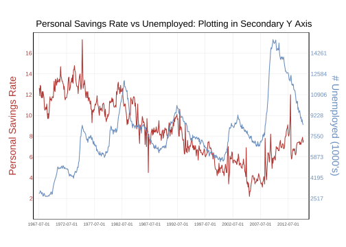

Code
df <- ggplot2::economics
y1 <- df$psavert
y2 <- df$unemploy
target.range <- range(y1)
origin.range <- range(y2)
a <- (target.range[2] - target.range[1]) / (origin.range[2] - origin.range[1])
b <- target.range[1] - a * origin.range[1]
library(data.table)
plot.df <- data.table(
date=as.POSIXct(df$date),
psavert=df$psavert,
unemploy=df$unemploy*a+b) %>%
data.table::melt(id="date")
b_date <- as.POSIXct("1967-07-01", tz = "UTC")
e_date <- as.POSIXct("2015-04-01", tz = "UTC")
dat.color <- c("#B03834", "#698DBD")
# 四周边框
dat.bor <- data.table(x1=c(rep(b_date-lubridate::years(1), 2), b_date-lubridate::years(1), e_date+lubridate::years(1)),
x2=c(rep(e_date+lubridate::years(1), 2), b_date-lubridate::years(1), e_date+lubridate::years(1)),
y1=c(18,0,0,0),
y2=c(18,0,18,18))
# 内部网格线
dat.gri <- data.table(x1=c(seq(b_date, e_date, "5 year"), rep(b_date-lubridate::years(1), 8)),
x2=c(seq(b_date, e_date, "5 year"), rep(e_date+lubridate::years(1), 8)),
y1=c(rep(0,10), seq(2,16,2)),
y2=c(rep(18,10), seq(2,16,2)))
# y轴标签
dat.y1.tex <- data.table(x=rep(b_date-lubridate::years(1), 8), y=seq(2,16,2), lab=seq(2,16,2))
y2.lab <- ((seq(2,16,2)-b)/a) %>% round()
dat.y2.tex <- data.table(x=rep(e_date+lubridate::years(1), 8), y=seq(2,16,2), lab=y2.lab)
# y轴标题
dat.y1.tit <- data.table(x=b_date-lubridate::years(6), y=9, lab="Personal Savings Rate")
dat.y2.tit <- data.table(x=e_date+lubridate::years(7), y=9, lab="# Unemployed (1000's)")
ggplot(plot.df, aes(date, value))+
geom_line(aes(color=variable),show.legend = F)+
geom_segment(data=dat.bor, aes(x=x1, xend=x2, y=y1, yend=y2))+ #border
geom_segment(data=dat.gri, aes(x=x1, xend=x2, y=y1, yend=y2), linewidth=0.2, color="gray", alpha=0.4)+ #grid
geom_text(data=dat.y1.tex, aes(x,y,label=lab), color=dat.color[1], size=3, hjust=1.2)+
geom_text(data=dat.y2.tex, aes(x,y,label=lab), color=dat.color[2], size=3, hjust=-0.1)+
geom_text(data=dat.y1.tit, aes(x,y,label=lab), color=dat.color[1], size=5, vjust=1.5, angle=90)+
geom_text(data=dat.y2.tit, aes(x,y,label=lab), color=dat.color[2], size=5, vjust=1.5, angle=-90)+
scale_color_manual(values = dat.color)+
scale_x_datetime(date_labels = "%Y-%m-%d", breaks = seq(b_date, e_date, by = "5 year"),
limits = c(b_date-lubridate::years(6), e_date+lubridate::years(7)), expand = c(0,0))+
scale_y_continuous(breaks = seq(2,16,2), limits = c(0,18), expand = c(0,0))+
labs(x= NULL, y=NULL,title = "Personal Savings Rate vs Unemployed: Plotting in Secondary Y Axis", color=NULL)+
theme_bw()+
theme(aspect.ratio = 1/1.8,
panel.border = element_blank(),
axis.text.y = element_blank(),
axis.text.x = element_text(size=6.2),
axis.ticks = element_blank(),
panel.grid = element_blank(),
plot.title = element_text(hjust = 0.5))